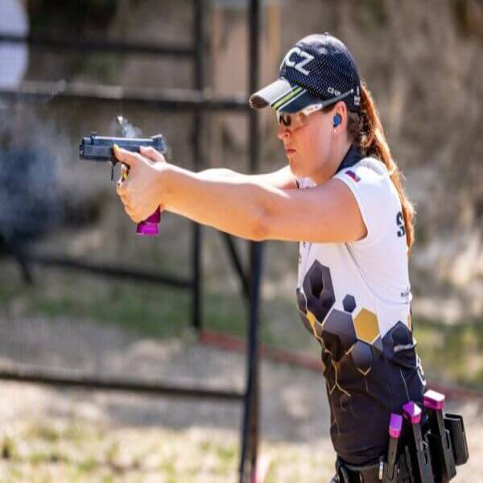
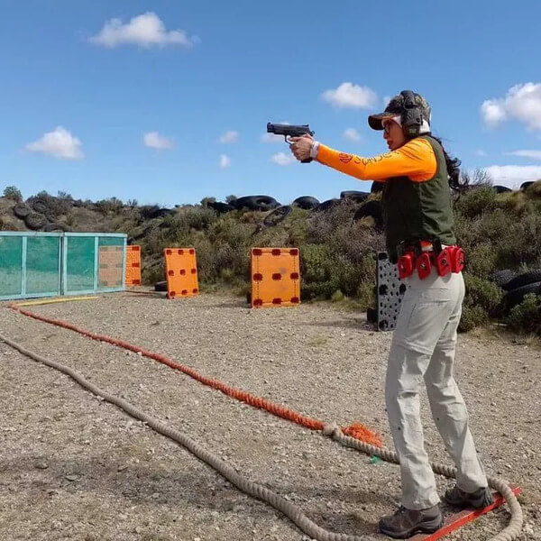

IPSC es el nombre con el que se conoce a una disciplina de tiro deportivo bajo el auspicio de una asociación con el mismo nombre, la Confederación Internacional de Tiro Práctico.
En esta seccion encontraras algunas fotos de los torneos de IPSC.




